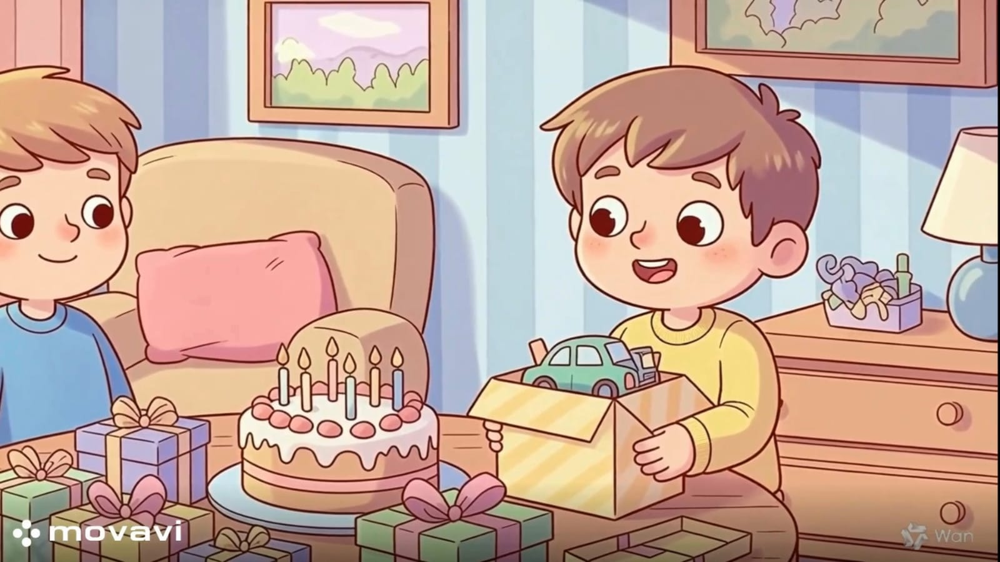
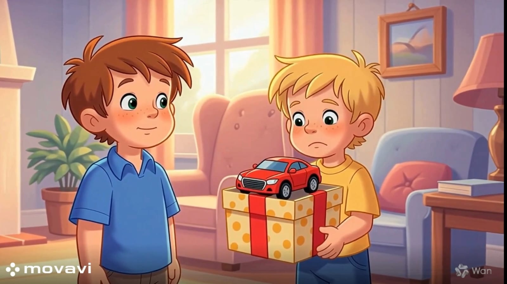

بعد الانتهاء من تدريس هذا الدرس يفترض أن يكون التلميذ قادرًا على:
أن يُعدد الطالب مواقف وأساليب التحية الصحيحة (تحية الصباح، تحية الغرباء، تحية الوداع).
أن يُميز بين ردود الفعل الإيجابية (التهنئة الصادقة) وردود الفعل السلبية (الحسد، اللامبالاة، التشكيك) عند سماع
أخبار سارة عن الآخرين.
أن يُظهر تقديراً لمشاعر الآخرين عند نجاحهم أو تميزهم.
أن يرفض السلوكيات السلبية مثل الحسد أو التقليل من جهد الآخرين.
أن يشعر بقيمة "الكلمة الطيبة" وأثرها في نشر السعادة والمحبة بين الأصدقاء.
أن يطبق مهارة التحية باستخدام "الابتسامة، الكلمة الطيبة، والنظر في العين.
يصيغ عبارات تهنئة مبتكرة لمناسبات مختلفة (مثل: "مبارك نجاحك، لقد بذلت جهدًا رائعًا.
أولاً: التهنئة بالنجاح والتفوق الدراسي

• "مبارك النجاح، ومنها للأعلى دائمًا!"
• "ألف مبروك التفوق، أنت بطل!"
• "مبارك لك هذا الإنجاز الرائع، نحن فخورون بك!"
ثانيًا: التهنئة بالمناسبات الشخصية والأعياد
• "كل عام وأنت بخير وسعادة."
• "عيد سعيد ومبارك لك ولأسرتك."
• " مبارك، فرحنا لك كثيرًا بهذا الخبر السعيد!"
ثالثًا: التهنئة بالفوز الرياضي
• "مبارك الفوز، لقد لعبت بذكاء ومهارة!"
• "تستحق هذا الفوز بجدارة، أحسنت يا بطل!"
رابعًا: التهنئة بالحصول على شيء جديد
• "مبارك لك الدراجة الجديدة، تسعد بها!"
• "يا لها من لعبة رائعة، مبارك لك!"

نشاط (1):
الموقف:
حصل زميلك "خالد" على درجة كاملة في اختبار اللغة العربية، وكان سعيدًا جدًا.
1. ماذا تقول لخالد لتشاركه فرحته؟
2. هل يكفي أن تبتسم له، أم يفضل قول عبارة مثل "مبارك نجاحك يا بطل"؟
3. كيف تشعر عندما تهنئ زميلك؟
نشاط (2):
الموقف :
جاء عيد الفطر (أو عيد الميلاد، أو أي مناسبة سعيدة)، وقابلت أقاربك وجيرانك.
1. ما هي العبارات التي نستخدمها في الأعياد؟
2. إذا كان جارك يحتفل بمولود جديد أو بيت جديد، ماذا تقول له؟
نشاط (3):
الموقف :
كنت تلعب مباراة كرة قدم مع فريق الفصل الآخر، وفاز الفريق المنافس عليك.
1. هل تترك الملعب غاضباً، أم تذهب لتهنئة الفريق الفائز؟
2. ماذا تقول لقائد الفريق الفائز؟
3. لماذا تعتبر التهنئة عند الخسارة دليلاً على الأخلاق العالية؟
نشاط (4):
الموقف :
أنت تهنئ صديقك لأنه اشترى حذاء جديد.
1. اختر السلوك الصحيح أثناء التهنئة:
- قول "مبارك" بوجه عابس ونبرة صوت منخفضة.